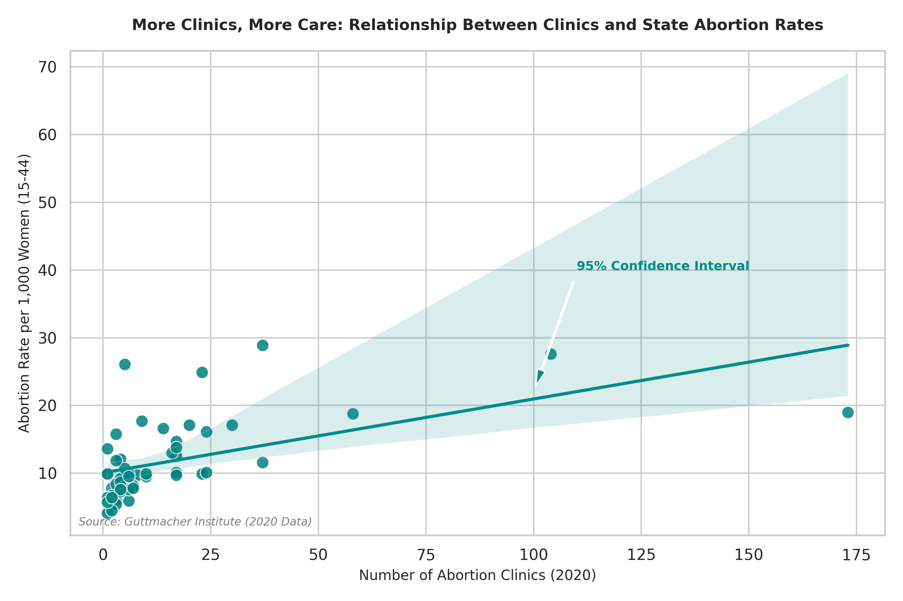
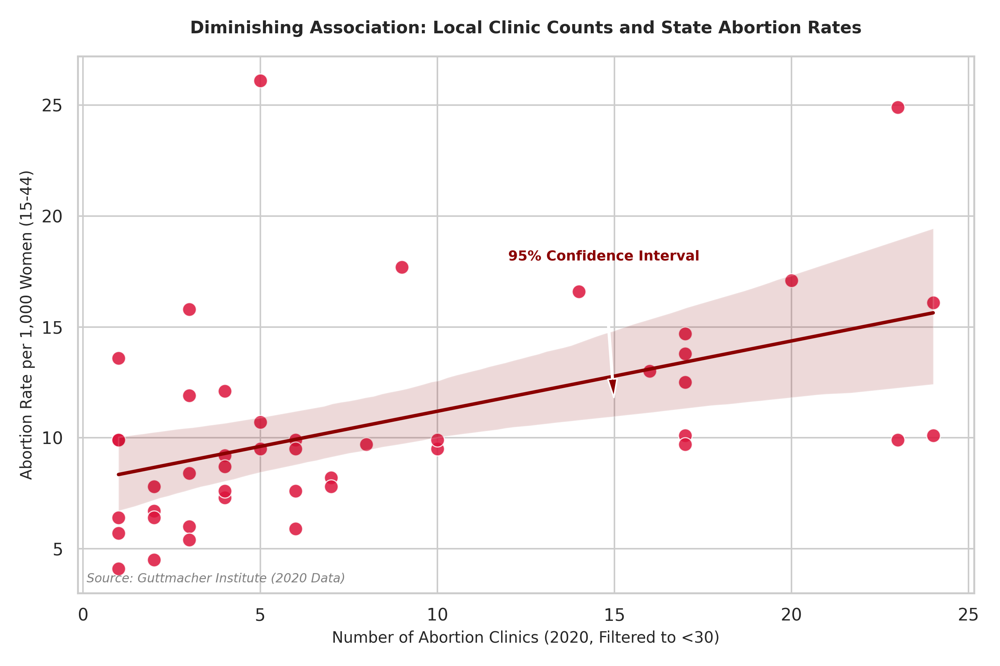

Proposition: The expansion of abortion clinics and providers directly drives up abortion rates and local access across U.S. states
FOR the Proposition

Design Decisions and Rationale:
- Uses raw state-level cross-sectional data from the Guttmacher Institute dataset, directly observing the relationship between the number of clinics in the state and the abortion rates per 1000 women aged 15-44 in 2020 without truncating or filtering the data.
- Uses a teal-colored scatter plot with a OLS regression line labeled with a 95% confidence interval providing a visual indidcator of variance while demonstrating an association.
- The title frames the trend around regional relationships, while the positive regression visually persuades the reader that there is a positive relationship between clinic expansion and abortion rates.
AGAINST the Proposition

Design Decisions and Rationale:
- This visualization implements data filtering to remove major outliers states that have a clinic count much greater than the rest of the nation to reduce the variance.
- It is styled to match visualization 1 so that it can be easitly compared to its effect.
- By stripping away the outliers that skew the data, the trend line flattens significantly to show if there is a meaningful variation when viewed outside of extreme outliers.
Final Reflection
Designing these two opposing visualizations from the same underlying dataset highlights how thin the line is between objective analysis and persuasion. While the earnest chart relies on focusing on making sure the data is presented accurately without outliers, while the deceptive chart achieves its rhetorical goal not through not cleaning the data properly allowing outliers to skew the results. Both approaches demonstrate that visualization is inherently rhetorical, where design choices regarding scope, titles, and encodings actively shape what conclusions a reader draws